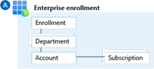
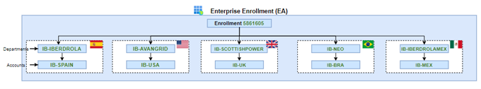
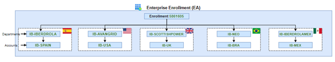
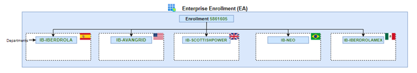
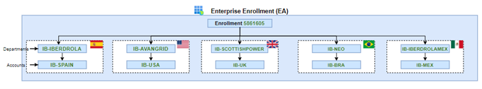

Azure Enrollment
The Enrollment represents a billing contract, also referred to as an Enterprise Agreement, that Iberdrola has with Microsoft to use Azure. Additionally, an enrollment often represents an organization's hierarchy, which includes departments, accounts, and subscriptions. This hierarchy represents cost-enrollment groups within an organization.

Iberdrola is identified by Enrollment number 5861605
 Whole picture of Azure enrollment structure is shown in the next figure:

Whole picture of Azure enrollment structure is shown in the next figure:

Enterprise Agreement -> “Iberdrola”
Department -> IB-{company} E.g. (IB-IBERDROLA, US-AVANTGRID…)
Accounts -> IB–{country name} E.g. (IB-SPAIN, IB-USA…)
Enterprise agreement.
An Enterprise Agreement (EA) enrollment represents the commercial relationship between Microsoft and how Iberdrola uses Azure.Department.
Departments help to segment costs into logical groupings and to set a budget or quota at the department level. The quota isn't enforced firmly and is used for reporting purposes. The current definition of the departments within the Iberdrola organization have been segregated by the countries they make up within the organization itself, to maintain proper coherence and comply with the best practices defined.  Accounts are organizational units in the Azure EA portal. They can be used to manage subscriptions and access reports. The Azure account is a global unique entity that gets you access to Azure services and your Azure subscriptions. The current definition of the accounts within the Iberdrola organization has been segregated by its operating countries.
Whole picture of Azure enrollment structure is shown in the next figure:
